7. Aprendizaje Supervisado#
7.1. KNN#
Método de los vecinos más cercanos es un método de aprendizaje supervisado.
Importamos las librerías necesarias y los datos
#%matplotlib notebook
import numpy as np
import matplotlib.pyplot as plt
import pandas as pd
from sklearn.model_selection import train_test_split
uu = 'https://raw.githubusercontent.com/vmoprojs/DataLectures/refs/heads/master/fruit_data_with_colors.txt'
fruits = pd.read_table(uu)
fruits.head()
| fruit_label | fruit_name | fruit_subtype | mass | width | height | color_score | |
|---|---|---|---|---|---|---|---|
| 0 | 1 | apple | granny_smith | 192 | 8.4 | 7.3 | 0.55 |
| 1 | 1 | apple | granny_smith | 180 | 8.0 | 6.8 | 0.59 |
| 2 | 1 | apple | granny_smith | 176 | 7.4 | 7.2 | 0.60 |
| 3 | 2 | mandarin | mandarin | 86 | 6.2 | 4.7 | 0.80 |
| 4 | 2 | mandarin | mandarin | 84 | 6.0 | 4.6 | 0.79 |
# creamos una correspondencia entre la etiqueta y el nombre de la fruta por facilidad de lectura
lookup_fruit_name = dict(zip(fruits.fruit_label.unique(), fruits.fruit_name.unique()))
lookup_fruit_name
{1: 'apple', 2: 'mandarin', 3: 'orange', 4: 'lemon'}
El archivo contiene la masa, la altura y el ancho de una selección de naranjas, limones y manzanas. Las alturas se midieron a lo largo del corazón de la fruta.
7.1.1. Revisando los datos#
# grafico de una matriz scatter
from matplotlib import cm
X = fruits[['height', 'width', 'mass', 'color_score']]
y = fruits['fruit_label']
X_train, X_test, y_train, y_test = train_test_split(X, y, random_state=0)
scatter = pd.plotting.scatter_matrix(X_train, c= y_train, marker = 'o', s=40, hist_kwds={'bins':15}, figsize=(9,9))
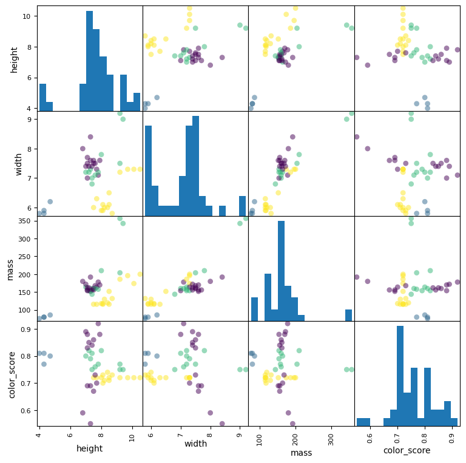
# grafico de 3D scatter plot
from mpl_toolkits.mplot3d import Axes3D
fig = plt.figure()
ax = fig.add_subplot(111, projection = '3d')
ax.scatter(X_train['width'], X_train['height'], X_train['color_score'], c = y_train, marker = 'o', s=100)
ax.set_xlabel('Ancho')
ax.set_ylabel('Alto')
ax.set_zlabel('color_score')
plt.show()
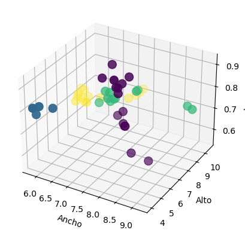
7.1.2. Creamos los conjuntos de entrenamiento y prueba#
# Para este ejemplo, usamos las características de masa, ancho y alto de cada instancia de fruta.
X = fruits[['mass', 'width', 'height']]
y = fruits['fruit_label']
# default es 75% / 25% train-test split
X_train, X_test, y_train, y_test = train_test_split(X, y, random_state=0)
7.1.3. Creamos el objeto clasificador#
from sklearn.neighbors import KNeighborsClassifier
knn = KNeighborsClassifier(n_neighbors = 5)
7.1.4. Entrenamos el clasificador (ajustamos el modelo) en los datos de entrenamiento#
knn.fit(X_train, y_train)
KNeighborsClassifier()In a Jupyter environment, please rerun this cell to show the HTML representation or trust the notebook.
On GitHub, the HTML representation is unable to render, please try loading this page with nbviewer.org.
KNeighborsClassifier()
7.1.5. Estimamos la precisión del clasificador usando los datos de prueba#
knn.score(X_test,y_test)
0.5333333333333333
7.1.6. Usar el clasificador para predecir datos no observados#
# primer ejemplo: una fruta pequeña con una masa de 20 g, ancho 4,3 cm, altura 5,5 cm
fruit_prediction = knn.predict([[20,4.3,5.5]])
print(fruit_prediction)
lookup_fruit_name[fruit_prediction[0]]
[2]
/opt/anaconda3/lib/python3.12/site-packages/sklearn/base.py:493: UserWarning: X does not have valid feature names, but KNeighborsClassifier was fitted with feature names
warnings.warn(
'mandarin'
7.1.7. Graficamos las fronteras de decisión de KNN#
from shared_utilities import plot_fruit_knn
plot_fruit_knn(X_train, y_train, 5, 'uniform') # elegimos 5 vecinos mas cercanos
---------------------------------------------------------------------------
ModuleNotFoundError Traceback (most recent call last)
Cell In[11], line 1
----> 1 from shared_utilities import plot_fruit_knn
3 plot_fruit_knn(X_train, y_train, 5, 'uniform')
File ~/Documents/Consultorias&Cursos/CURSOS/Cooking/MLPython/pyML/shared_utilities.py:11
9 from sklearn import neighbors
10 import matplotlib.patches as mpatches
---> 11 import graphviz
12 from sklearn.tree import export_graphviz
13 import matplotlib.patches as mpatches
ModuleNotFoundError: No module named 'graphviz'
7.1.8. ¿Cuán sensible es la precisión de la clasificación K-NN a la elección de K?#
k_range = range(1,20)
scores = []
for k in k_range:
knn = KNeighborsClassifier(n_neighbors = k)
knn.fit(X_train, y_train)
scores.append(knn.score(X_test, y_test))
plt.figure()
plt.xlabel('k')
plt.ylabel('accuracy')
plt.scatter(k_range, scores)
plt.xticks([0,5,10,15,20]);
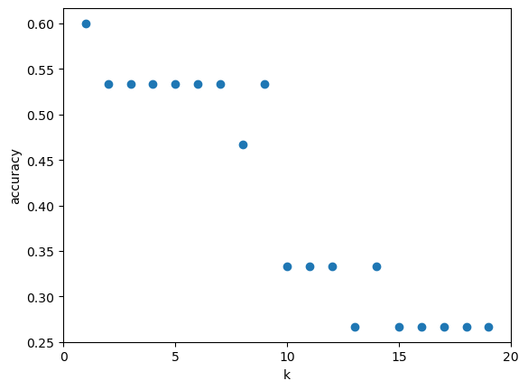
7.1.9. ¿Cuán sensible es la precisión de la clasificación K-NN a la elección de la proporción de la partición?#
t = [0.8, 0.7, 0.6, 0.5, 0.4, 0.3, 0.25]
knn = KNeighborsClassifier(n_neighbors = 5)
plt.figure()
for s in t:
scores = []
for i in range(1,1000):
X_train, X_test, y_train, y_test = train_test_split(X, y, test_size = 1-s)
knn.fit(X_train, y_train)
scores.append(knn.score(X_test, y_test))
plt.plot(s, np.mean(scores), 'bo')
plt.xlabel('Training set proportion (%)')
plt.ylabel('accuracy');
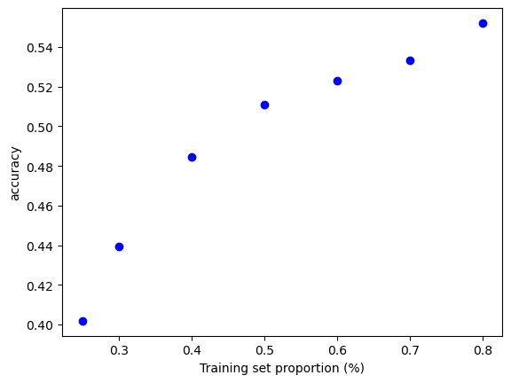
7.2. Modelos lineales para regresión#
7.2.1. Regresión lineal#
# creamos un conjunto de datos para regresion
from sklearn.datasets import make_regression
plt.figure()
plt.title('Sample regression problem with one input variable')
X_R1, y_R1 = make_regression(n_samples = 100, n_features=1,
n_informative=1, bias = 150.0,
noise = 30, random_state=0)
plt.scatter(X_R1, y_R1, marker= 'o', s=50)
plt.show()
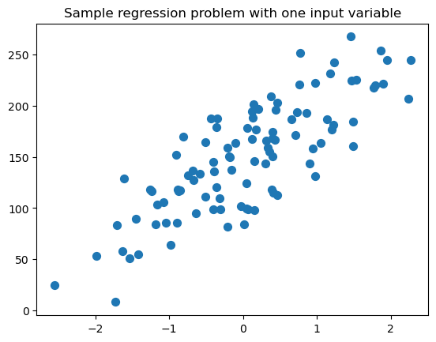
from sklearn.linear_model import LinearRegression
X_train, X_test, y_train, y_test = train_test_split(X_R1, y_R1,
random_state = 0)
linreg = LinearRegression().fit(X_train, y_train)
print('linear model coeff (w): {}'
.format(linreg.coef_))
print('linear model intercept (b): {:.3f}'
.format(linreg.intercept_))
print('R-squared score (training): {:.3f}'
.format(linreg.score(X_train, y_train)))
print('R-squared score (test): {:.3f}'
.format(linreg.score(X_test, y_test)))
linear model coeff (w): [45.70870465]
linear model intercept (b): 148.446
R-squared score (training): 0.679
R-squared score (test): 0.492
7.2.2. Regresion lineal: un gráfico#
plt.figure(figsize=(5,4))
plt.scatter(X_R1, y_R1, marker= 'o', s=50, alpha=0.8)
plt.plot(X_R1, linreg.coef_ * X_R1 + linreg.intercept_, 'r-')
plt.title('Least-squares linear regression')
plt.xlabel('Feature value (x)')
plt.ylabel('Target value (y)')
plt.show()
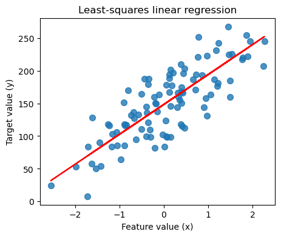
Si tienes problemas con la instalación de graphviz, visita https://pygraphviz.github.io/documentation/stable/install.html
from shared_utilities import load_crime_dataset
# Comunidades y dataset de crimen
(X_crime, y_crime) = load_crime_dataset()
X_train, X_test, y_train, y_test = train_test_split(X_crime, y_crime,
random_state = 0)
linreg = LinearRegression().fit(X_train, y_train)
print('Crime dataset')
print('linear model intercept: {}'
.format(linreg.intercept_))
print('linear model coeff:\n{}'
.format(linreg.coef_))
print('R-squared score (training): {:.3f}'
.format(linreg.score(X_train, y_train)))
print('R-squared score (test): {:.3f}'
.format(linreg.score(X_test, y_test)))
Crime dataset
linear model intercept: -1728.1306725953114
linear model coeff:
[ 1.61892346e-03 -9.43009110e+01 1.36067510e+01 -3.13380670e+01
-8.15482723e-02 -1.69455128e+01 -2.42730375e-03 1.53013232e+00
-1.39193248e-02 -7.72112833e+00 2.28112354e+01 -5.65708295e+00
9.34751364e+00 2.06969566e-01 -7.43413626e+00 9.65856476e-03
4.38030290e-03 4.79754625e-03 -4.46469212e+00 -1.60907140e+01
8.82778012e+00 -5.06734503e-01 -1.42198055e+00 8.17551991e+00
-3.87048268e+00 -3.54209213e+00 4.48758304e+00 9.30645715e+00
1.73644996e+02 1.18220766e+01 1.51120836e+02 -3.29613007e+02
-1.35343395e+02 6.95380108e-01 -2.38369008e+01 2.77038981e+00
3.82248925e-01 4.38813358e+00 -1.06410851e+01 -4.92294176e-03
4.14031827e+01 -1.16206866e-03 1.18568968e+00 1.75418465e+00
-3.68283678e+00 1.59679443e+00 -8.42180230e+00 -3.79703897e+01
4.74076990e+01 -2.50768374e+01 -2.88246410e-01 -3.65633234e+01
1.89516080e+01 -4.53336736e+01 6.82698598e+02 1.04478671e+02
-3.28575414e+02 -3.14364068e+01 2.74053494e+01 5.12336432e+00
6.91580764e+01 1.98267157e-02 -6.12133638e-01 2.65335065e+01
1.00704633e+01 -1.58621594e+00 2.24025322e+00 7.38288450e+00
-3.13915504e+01 -9.78026040e-05 5.01970944e-05 -3.48042555e-04
-2.50242794e-04 -5.26610456e-01 -5.16564774e-01 -4.10464090e-01
1.16146366e-01 1.46167357e+00 -3.04019816e-01 2.43792841e+00
-3.65615457e+01 1.41488917e-01 2.88800603e-01 1.77464865e+01
5.96587698e-01 1.98257510e+00 -1.36380442e-01 -1.85303461e+00]
R-squared score (training): 0.673
R-squared score (test): 0.496
7.2.3. Regresión Ridge#
from sklearn.linear_model import Ridge
X_train, X_test, y_train, y_test = train_test_split(X_crime, y_crime,
random_state = 0)
linridge = Ridge(alpha=20.0).fit(X_train, y_train)
print('Crime dataset')
print('ridge regression linear model intercept: {}'
.format(linridge.intercept_))
print('ridge regression linear model coeff:\n{}'
.format(linridge.coef_))
print('R-squared score (training): {:.3f}'
.format(linridge.score(X_train, y_train)))
print('R-squared score (test): {:.3f}'
.format(linridge.score(X_test, y_test)))
print('Number of non-zero features: {}'
.format(np.sum(linridge.coef_ != 0)))
Crime dataset
ridge regression linear model intercept: -3352.4230358461637
ridge regression linear model coeff:
[ 1.95091438e-03 2.19322667e+01 9.56286607e+00 -3.59178973e+01
6.36465325e+00 -1.96885471e+01 -2.80715856e-03 1.66254486e+00
-6.61426604e-03 -6.95450680e+00 1.71944731e+01 -5.62819154e+00
8.83525114e+00 6.79085746e-01 -7.33614221e+00 6.70389803e-03
9.78505502e-04 5.01202169e-03 -4.89870524e+00 -1.79270062e+01
9.17572382e+00 -1.24454193e+00 1.21845360e+00 1.03233089e+01
-3.78037278e+00 -3.73428973e+00 4.74595305e+00 8.42696855e+00
3.09250005e+01 1.18644167e+01 -2.05183675e+00 -3.82210450e+01
1.85081589e+01 1.52510829e+00 -2.20086608e+01 2.46283912e+00
3.29328703e-01 4.02228467e+00 -1.12903533e+01 -4.69567413e-03
4.27046505e+01 -1.22507167e-03 1.40795790e+00 9.35041855e-01
-3.00464253e+00 1.12390514e+00 -1.82487653e+01 -1.54653407e+01
2.41917002e+01 -1.32497562e+01 -4.20113118e-01 -3.59710660e+01
1.29786751e+01 -2.80765995e+01 4.38513476e+01 3.86590044e+01
-6.46024046e+01 -1.63714023e+01 2.90397330e+01 4.15472907e+00
5.34033563e+01 1.98773191e-02 -5.47413979e-01 1.23883518e+01
1.03526583e+01 -1.57238894e+00 3.15887097e+00 8.77757987e+00
-2.94724962e+01 -2.32601756e-04 3.13528914e-04 -4.14022055e-04
-1.79457415e-04 -5.74054527e-01 -5.17742507e-01 -4.20670931e-01
1.53383594e-01 1.32725423e+00 3.84863158e+00 3.03024594e+00
-3.77692644e+01 1.37933464e-01 3.07676522e-01 1.57128807e+01
3.31418306e-01 3.35994414e+00 1.61265911e-01 -2.67619878e+00]
R-squared score (training): 0.671
R-squared score (test): 0.494
Number of non-zero features: 88
7.2.3.1. Regresión Ridge con variables normalizadas#
from sklearn.preprocessing import MinMaxScaler
scaler = MinMaxScaler()
from sklearn.linear_model import Ridge
X_train, X_test, y_train, y_test = train_test_split(X_crime, y_crime,
random_state = 0)
X_train_scaled = scaler.fit_transform(X_train)
X_test_scaled = scaler.transform(X_test)
linridge = Ridge(alpha=20.0).fit(X_train_scaled, y_train)
print('Crime dataset')
print('ridge regression linear model intercept: {}'
.format(linridge.intercept_))
print('ridge regression linear model coeff:\n{}'
.format(linridge.coef_))
print('R-squared score (training): {:.3f}'
.format(linridge.score(X_train_scaled, y_train)))
print('R-squared score (test): {:.3f}'
.format(linridge.score(X_test_scaled, y_test)))
print('Number of non-zero features: {}'
.format(np.sum(linridge.coef_ != 0)))
Crime dataset
ridge regression linear model intercept: 933.3906385044168
ridge regression linear model coeff:
[ 88.68827454 16.48947987 -50.30285445 -82.90507574 -65.89507244
-2.27674244 87.74108514 150.94862182 18.8802613 -31.05554992
-43.13536109 -189.44266328 -4.52658099 107.97866804 -76.53358414
2.86032762 34.95230077 90.13523036 52.46428263 -62.10898424
115.01780357 2.66942023 6.94331369 -5.66646499 -101.55269144
-36.9087526 -8.7053343 29.11999068 171.25963057 99.36919476
75.06611841 123.63522539 95.24316483 -330.61044265 -442.30179004
-284.49744001 -258.37150609 17.66431072 -101.70717151 110.64762887
523.13611718 24.8208959 4.86533322 -30.46775619 -3.51753937
50.57947231 10.84840601 18.27680946 44.11189865 58.33588176
67.08698975 -57.93524659 116.1446052 53.81163718 49.01607711
-7.62262031 55.14288543 -52.08878272 123.39291017 77.12562171
45.49795317 184.91229771 -91.35721203 1.07975971 234.09267451
10.3887921 94.7171829 167.91856631 -25.14025088 -1.18242839
14.60362467 36.77122659 53.19878339 -78.86365997 -5.89858411
26.04790298 115.1534917 68.74143311 68.28588166 16.5260514
-97.90513652 205.20448474 75.97304123 61.3791085 -79.83157049
67.26700741 95.67094538 -11.88380569]
R-squared score (training): 0.615
R-squared score (test): 0.599
Number of non-zero features: 88
7.2.3.2. Regresión Ridge con parámetro de regularización alpha#
print('Ridge regression: effect of alpha regularization parameter\n')
for this_alpha in [0, 1, 10, 20, 50, 100, 1000]:
linridge = Ridge(alpha = this_alpha).fit(X_train_scaled, y_train)
r2_train = linridge.score(X_train_scaled, y_train)
r2_test = linridge.score(X_test_scaled, y_test)
num_coeff_bigger = np.sum(abs(linridge.coef_) > 1.0)
print('Alpha = {:.2f}\nnum abs(coeff) > 1.0: {}, \
r-squared training: {:.2f}, r-squared test: {:.2f}\n'
.format(this_alpha, num_coeff_bigger, r2_train, r2_test))
Ridge regression: effect of alpha regularization parameter
Alpha = 0.00
num abs(coeff) > 1.0: 88, r-squared training: 0.67, r-squared test: 0.49
Alpha = 1.00
num abs(coeff) > 1.0: 87, r-squared training: 0.66, r-squared test: 0.56
Alpha = 10.00
num abs(coeff) > 1.0: 87, r-squared training: 0.63, r-squared test: 0.59
Alpha = 20.00
num abs(coeff) > 1.0: 88, r-squared training: 0.61, r-squared test: 0.60
Alpha = 50.00
num abs(coeff) > 1.0: 86, r-squared training: 0.58, r-squared test: 0.58
Alpha = 100.00
num abs(coeff) > 1.0: 87, r-squared training: 0.55, r-squared test: 0.55
Alpha = 1000.00
num abs(coeff) > 1.0: 84, r-squared training: 0.31, r-squared test: 0.30
7.2.4. Regresión Lasso#
from sklearn.linear_model import Lasso
from sklearn.preprocessing import MinMaxScaler
scaler = MinMaxScaler()
X_train, X_test, y_train, y_test = train_test_split(X_crime, y_crime,
random_state = 0)
X_train_scaled = scaler.fit_transform(X_train)
X_test_scaled = scaler.transform(X_test)
linlasso = Lasso(alpha=2.0, max_iter = 10000).fit(X_train_scaled, y_train)
print('Crime dataset')
print('lasso regression linear model intercept: {}'
.format(linlasso.intercept_))
print('lasso regression linear model coeff:\n{}'
.format(linlasso.coef_))
print('Non-zero features: {}'
.format(np.sum(linlasso.coef_ != 0)))
print('R-squared score (training): {:.3f}'
.format(linlasso.score(X_train_scaled, y_train)))
print('R-squared score (test): {:.3f}\n'
.format(linlasso.score(X_test_scaled, y_test)))
print('Features with non-zero weight (sorted by absolute magnitude):')
for e in sorted (list(zip(list(X_crime), linlasso.coef_)),
key = lambda e: -abs(e[1])):
if e[1] != 0:
print('\t{}, {:.3f}'.format(e[0], e[1]))
Crime dataset
lasso regression linear model intercept: 1186.612061998579
lasso regression linear model coeff:
[ 0. 0. -0. -168.18346054
-0. -0. 0. 119.6938194
0. -0. 0. -169.67564456
-0. 0. -0. 0.
0. 0. -0. -0.
0. -0. 0. 0.
-57.52991966 -0. -0. 0.
259.32889226 -0. 0. 0.
0. -0. -1188.7396867 -0.
-0. -0. -231.42347299 0.
1488.36512229 0. -0. -0.
-0. 0. 0. 0.
0. 0. -0. 0.
20.14419415 0. 0. 0.
0. 0. 339.04468804 0.
0. 459.53799903 -0. 0.
122.69221826 -0. 91.41202242 0.
-0. 0. 0. 73.14365856
0. -0. 0. 0.
86.35600042 0. 0. 0.
-104.57143405 264.93206555 0. 23.4488645
-49.39355188 0. 5.19775369 0. ]
Non-zero features: 20
R-squared score (training): 0.631
R-squared score (test): 0.624
Features with non-zero weight (sorted by absolute magnitude):
PctKidsBornNeverMar, 1488.365
PctKids2Par, -1188.740
HousVacant, 459.538
PctPersDenseHous, 339.045
NumInShelters, 264.932
MalePctDivorce, 259.329
PctWorkMom, -231.423
pctWInvInc, -169.676
agePct12t29, -168.183
PctVacantBoarded, 122.692
pctUrban, 119.694
MedOwnCostPctIncNoMtg, -104.571
MedYrHousBuilt, 91.412
RentQrange, 86.356
OwnOccHiQuart, 73.144
PctEmplManu, -57.530
PctBornSameState, -49.394
PctForeignBorn, 23.449
PctLargHouseFam, 20.144
PctSameCity85, 5.198
7.2.4.1. Regresión Lasso con parámetro de regularización alpha#
print('Lasso regression: effect of alpha regularization\n\
parameter on number of features kept in final model\n')
for alpha in [0.5, 1, 2, 3, 5, 10, 20, 50]:
linlasso = Lasso(alpha, max_iter = 10000).fit(X_train_scaled, y_train)
r2_train = linlasso.score(X_train_scaled, y_train)
r2_test = linlasso.score(X_test_scaled, y_test)
print('Alpha = {:.2f}\nFeatures kept: {}, r-squared training: {:.2f}, \
r-squared test: {:.2f}\n'
.format(alpha, np.sum(linlasso.coef_ != 0), r2_train, r2_test))
Lasso regression: effect of alpha regularization
parameter on number of features kept in final model
Alpha = 0.50
Features kept: 35, r-squared training: 0.65, r-squared test: 0.58
Alpha = 1.00
Features kept: 25, r-squared training: 0.64, r-squared test: 0.60
Alpha = 2.00
Features kept: 20, r-squared training: 0.63, r-squared test: 0.62
Alpha = 3.00
Features kept: 17, r-squared training: 0.62, r-squared test: 0.63
Alpha = 5.00
Features kept: 12, r-squared training: 0.60, r-squared test: 0.61
Alpha = 10.00
Features kept: 6, r-squared training: 0.57, r-squared test: 0.58
Alpha = 20.00
Features kept: 2, r-squared training: 0.51, r-squared test: 0.50
Alpha = 50.00
Features kept: 1, r-squared training: 0.31, r-squared test: 0.30
7.3. Árboles de decisión#
from sklearn.datasets import load_iris
from sklearn.tree import DecisionTreeClassifier
from shared_utilities import plot_decision_tree
from sklearn.model_selection import train_test_split
iris = load_iris()
X_train, X_test, y_train, y_test = train_test_split(iris.data, iris.target, random_state = 3)
clf = DecisionTreeClassifier().fit(X_train, y_train)
print('Accuracy of Decision Tree classifier on training set: {:.2f}'
.format(clf.score(X_train, y_train)))
print('Accuracy of Decision Tree classifier on test set: {:.2f}'
.format(clf.score(X_test, y_test)))
Accuracy of Decision Tree classifier on training set: 1.00
Accuracy of Decision Tree classifier on test set: 0.97
7.3.1. Establecer la profundidad máxima del árbol de decisión para ayudar a evitar el sobreajuste#
clf2 = DecisionTreeClassifier(max_depth = 3).fit(X_train, y_train)
print('Accuracy of Decision Tree classifier on training set: {:.2f}'
.format(clf2.score(X_train, y_train)))
print('Accuracy of Decision Tree classifier on test set: {:.2f}'
.format(clf2.score(X_test, y_test)))
Accuracy of Decision Tree classifier on training set: 0.98
Accuracy of Decision Tree classifier on test set: 0.97
7.3.2. Visualizando árboles de decisión#
plot_decision_tree(clf, iris.feature_names, iris.target_names)
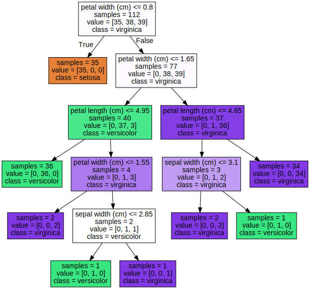
7.3.3. Versión Pre-pruned (max_depth = 3)#
plot_decision_tree(clf2, iris.feature_names, iris.target_names)
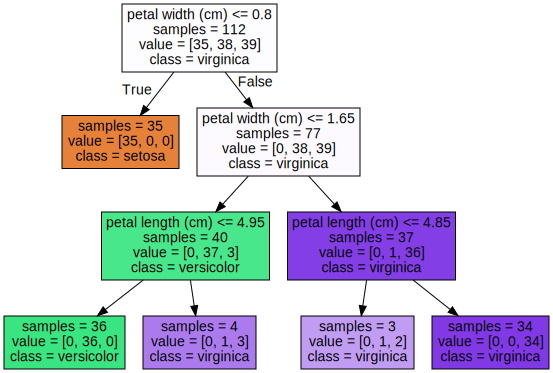
7.3.3.1. Feature importance#
from shared_utilities import plot_feature_importances
plt.figure(figsize=(10,4), dpi=80)
plot_feature_importances(clf, iris.feature_names)
plt.show()
print('Feature importances: {}'.format(clf.feature_importances_))
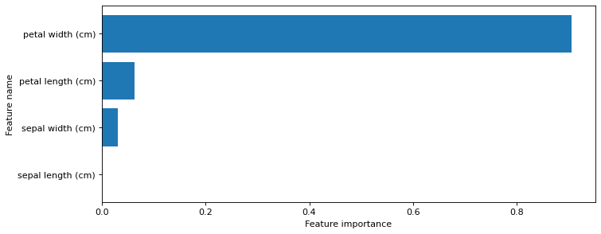
Feature importances: [0. 0.03128242 0.06251049 0.90620709]
from sklearn.tree import DecisionTreeClassifier
from shared_utilities import plot_class_regions_for_classifier_subplot
X_train, X_test, y_train, y_test = train_test_split(iris.data, iris.target, random_state = 0)
fig, subaxes = plt.subplots(6, 1, figsize=(6, 32))
pair_list = [[0,1], [0,2], [0,3], [1,2], [1,3], [2,3]]
tree_max_depth = 4
for pair, axis in zip(pair_list, subaxes):
X = X_train[:, pair]
y = y_train
clf = DecisionTreeClassifier(max_depth=tree_max_depth).fit(X, y)
title = 'Decision Tree, max_depth = {:d}'.format(tree_max_depth)
plot_class_regions_for_classifier_subplot(clf, X, y, None,
None, title, axis,
iris.target_names)
axis.set_xlabel(iris.feature_names[pair[0]])
axis.set_ylabel(iris.feature_names[pair[1]])
plt.tight_layout()
plt.show()
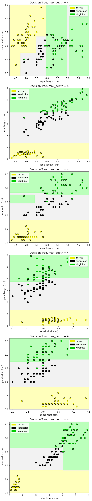
7.3.3.2. Ejemplo#
from sklearn.datasets import load_breast_cancer
cancer = load_breast_cancer()
(X_cancer, y_cancer) = load_breast_cancer(return_X_y = True)
from sklearn.tree import DecisionTreeClassifier
from shared_utilities import plot_decision_tree
from shared_utilities import plot_feature_importances
X_train, X_test, y_train, y_test = train_test_split(X_cancer, y_cancer, random_state = 0)
clf = DecisionTreeClassifier(max_depth = 4, min_samples_leaf = 8,
random_state = 0).fit(X_train, y_train)
plot_decision_tree(clf, cancer.feature_names, cancer.target_names)
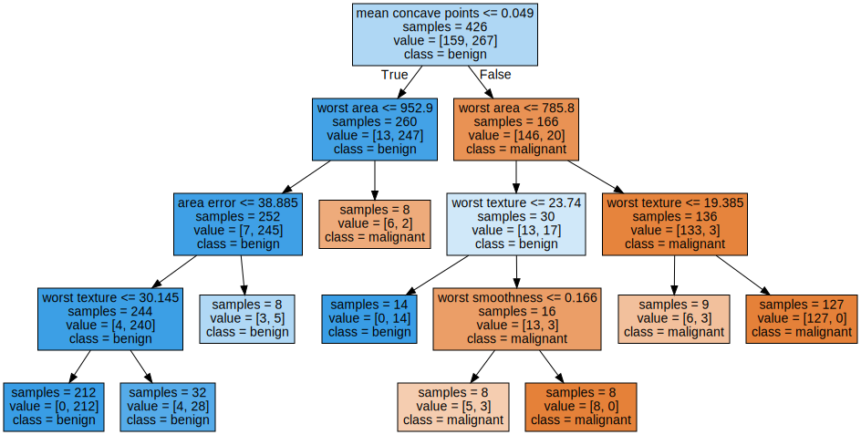
print('Breast cancer dataset: decision tree')
print('Accuracy of DT classifier on training set: {:.2f}'
.format(clf.score(X_train, y_train)))
print('Accuracy of DT classifier on test set: {:.2f}'
.format(clf.score(X_test, y_test)))
plt.figure(figsize=(10,6),dpi=80)
plot_feature_importances(clf, cancer.feature_names)
plt.tight_layout()
plt.show()
Breast cancer dataset: decision tree
Accuracy of DT classifier on training set: 0.96
Accuracy of DT classifier on test set: 0.94